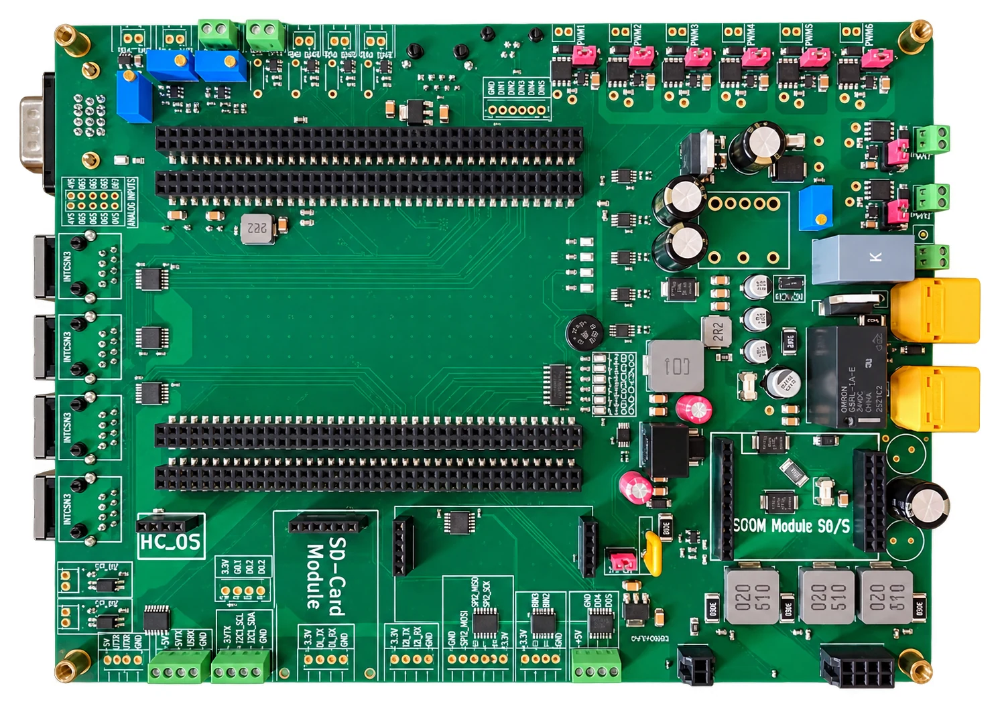

BIOMEDICAL / ELECTRONICS
Mechanical ventilator control board
A redesigned controller PCB for a research ventilator, integrating power distribution, pneumatic sensing, and actuator interfaces.

Project overview
I redesigned the main electronic board of an existing experimental ventilator at TechRes Lab. The project was part of my master’s thesis and supports the EMG acquisition board. The ventilator’s existing control architecture provided the starting point; my contribution focused on the power supply section and the connection to the EMG acquisition board.
Problem & objective
The research platform needed a controller board that could coordinate ventilation subsystems while exposing reliable connections for experiments. Its design also had to accommodate external power, battery backup, and the new EMG acquisition system.
Interactive 3D model
Inspect the board from every angle.
Load the supplied ventilator controller assembly to inspect component placement and external connections.
Converted from the supplied STEP assembly for browser viewing. Non-meshed CAD annotations and pin markers are omitted. The model documents the board design rather than measured ventilator performance.
Documentation & CAD
Explore the EMG acquisition board for the signal chain and thesis evaluation results.